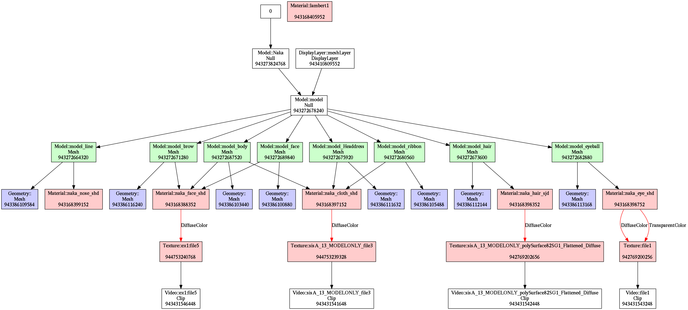

なんか作る
いま作っているもの
- last-progress1
-
ゲームになる予定のもの。Rustで書いている。
FBXローダから自作しているが、まだその部分を実装中なので、現状ではFBXモデルビューアまがいのものにすぎない。進捗はときどきtogetterに上げる。

最近のいいかんじの進捗画像。 なお、3Dモデルは私が作ったのではない。
いままでに作ったもの
- fbx_direct
-
RustでFBXファイルのパースを行う低級ライブラリ。
これはXMLのStAXをベースにしたもので、構文を扱うだけなので、単体ではFBXを3Dコンテンツとして扱うことは難しい。 - fbx_objects_depviz
-
FBXの内部的構造を可視化するツール。Rustで書いた。
ノードの構造を可視化した画像(を生成する、graphvizのdotファイル)を出力する。 テクスチャとメッシュのみを可視化した場合の出力 jsonで設定を記述することで、ノードの種類や名前によって表示・非表示を選択したり、色を変更したりできる。
- 短編 (東京工業女学院)
-
同級生と食事しているときに出たネタで書いてみた短編。
私だけだと続かないので、ロ技研の皆にも書いてほしい。